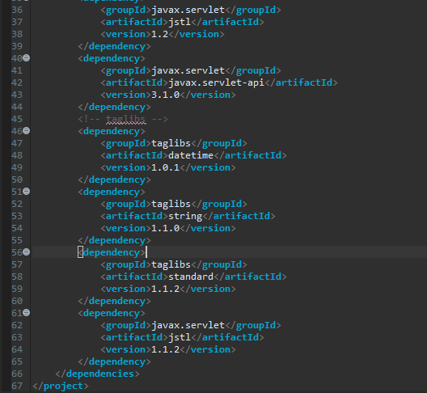
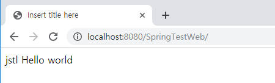
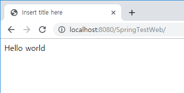
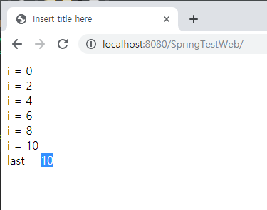
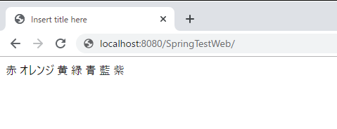
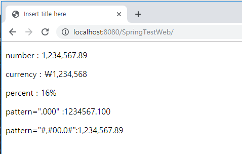
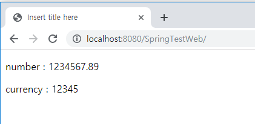
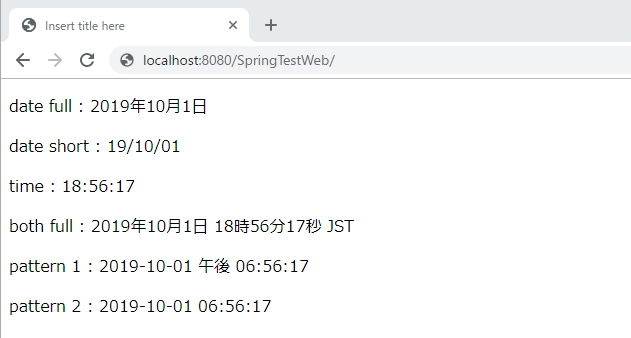

[Java スタディ - 38] Web spring frameworkのJSPで使う言語 JSTL - コアー、フォーマッティング
こんにちは。明月です。
このページでは「Web spring framework」の「view」で使う「jstl」 - コアー、フォーマッティングに関して調べてみました。
先、「jstl」とは「JSP Standard Tag Library」の略語で、「jsp」ページで「java」の言語ではなく、タグの形でプログラミングができる言語と言います。
この言語は「String」だけではなく、「servlet」、「struts」フレームワークでも使われます。
実は個人的に「jstl」は「2000」年度頃にデベロッパーとデザインの業務を分けなければならないという概念が多い時、デザイナーや言語に慣れてないFront-endデベロッパーがサーバサイド言語と区別するように使用するデザイン専用言語といいました。これが本当に事実かはよく知りません。
「jstl」を使用するようには「pom.xml」で３つのライブラリを連結しなければならないです。
<dependencies>
<!-- taglibs -->
<dependency>
<groupId>taglibs</groupId>
<artifactId>datetime</artifactId>
<version>1.0.1</version>
</dependency>
<dependency>
<groupId>taglibs</groupId>
<artifactId>string</artifactId>
<version>1.1.0</version>
</dependency>
<dependency>
<groupId>taglibs</groupId>
<artifactId>standard</artifactId>
<version>1.1.2</version>
</dependency>
<dependency>
<groupId>javax.servlet</groupId>
<artifactId>jstl</artifactId>
<version>1.1.2</version>
</dependency>
</dependencies>

使用方法に関して「jsp」ファイルの宣言部にラブラリを宣言して使用します。
<!-- ライブラリ -->
<%@ taglib prefix="c" uri="http://java.sun.com/jsp/jstl/core" %>
<!-- 使用方法 -->
<c:set var="data" value="jstl Hello world" />
${data}

使用方法に関しては上の「core」ライブラリの接頭辞が「c」で始まるライブラリで「jstl」では「
「jstl」では全てライブラリが５つがありますが、全てそれぞれの接頭辞があります。
| ライブラリ | 機能 | URI識別子 | 接頭辞 |
|---|---|---|---|
| コアー | 一般プログラムで提供する制御処理を行うライブラリ | http://java.sun.com/jsp/jstl/core | c |
| フォーマッティング | 数字、日付、時間をフォーマティングする機能と国際化、多国語処理するライブラリ | http://java.sun.com/jsp/jstl/fmt | fmt |
| 関数 | 文字列を処理するライブラリ | http://java.sun.com/jsp/jstl/functions | fn |
| データベース | データベースと関連機能を処理するライブラリ | http://java.sun.com/jsp/jstl/sql | sql |
| XML処理 | XMLと関連 | http://java.sun.com/jsp/jstl/xml | x |
コアーライブライ
<c:set/>, <c:remove/>
- データ宣言、削除処理
<c:set var="変数名" value="割り当てた値" scope="変数の有効範囲 page|request|session|application" /> !-- scope의 default는 page --><c:set var="data" value="Hello world" /> ${data} <c:remove var="data" /> ${data}
<c:out/>
- データを出力するタグです。
<c:out var="変数名" default="基本値" escapeXML="true|false" /> <!-- escapeXMLは <,>,&,',"の文字を各 <, >, &, ', "で変換して出力する。 --><c:set var="data" value="Hello world" /> <c:out value="${data}" default="Not data" escapeXml="true"/>
<c:if/>
- プログラミングで「if」と同じ処理の流れの分岐タグです。
<c:if test="表現式" var="結果変数名" scope="変数の有効範囲 page|request|session|application"> 結果 </c:if> <!-- 表現式は empty(null), !empty(not null), eq(==), ne(!=)を使う。 --><c:set var="data" value="0" /> <c:if test="${data eq 0}"> Hello world </c:if>
<c:choose/>, <c:when/>, <c:otherwise/>
- 「if」式はありますが、「if~else」式はないです。この文法が「if~else」だと思うとよいです。
<c:choose> <c:when test="表現式"> 結果 </c:when> <c:otherwise> 結果 </c:otherwise> </c:choose><c:set var="data" value="0" /> <c:if test="${data eq 0}"> Hello world </c:if>
<c:forEach/>
-ループのタグです。
<-- 属性タイプ --><c:forEach var="結果変数名" items="表現式" varStatus="追加属性値" begin="開始値" end="終了値 " step="増加値"> 結果 </c:forEach>
属性メソッド 説明 current 現在値 index ゼロ基盤(zero-based)インデックス値 count 1基盤(one-based)インデックス値 first 最初値可否 last 最後値可否 begin 開始値 end 終了値 step 増加値 <!-- forEach整数範囲で繰り返す。--> <c:forEach var="i" begin="0" end="10" step="2" varStatus="x"> i = ${i}<br /> <c:if test="${x.last}"> last = ${i} </c:if> </c:forEach>
<c:forTokens/>
<- 「foreach」と同じ処理ですが、delimiterで分割して繰り返すのが特徴
<c:forTokens var="結果変数名" items="表現式" delims="expression" varStatus="追加属性値" begin="開始値" end="最終値 " step="増加値"> 結果 </c:forTokens><c:forTokens var="color" items="赤|オレンジ|黄|緑|青|藍|紫" delims="|" varStatus="i" > ${color} </c:forTokens>
フォーマッティングライブラリ
<fmt:formatNumber/>
- 数字を文字に変換することと関係あるタグです。
<fmt:formatNumber value="numericValue" [type="{number|currency|percent}"] [pattern="customPattern"] [var="varName"] [scope="{page|request|session|application}"]/><!-- 地域設定 --> <fmt:setLocale value="ja-JP"/> <p>number : <fmt:formatNumber value="1234567.89" type="number"/></p> <p>currency : <fmt:formatNumber value="1234567.89" type="currency" currencySymbol="￦" /> </p> <p>percent : <fmt:formatNumber type="percent">0.159</fmt:formatNumber></p> <p>pattern=".000" :<fmt:formatNumber value="1234567.1" pattern=".000" /></p> <p>pattern="#,#00.0#":<fmt:formatNumber value="1234567.891" pattern="#,#00.0#"/></p>
<fmt:parseNumber/>
- 文字を数字に返還することと関係がるタグです。
<fmt:parseNumber [type="{number|currency|percent}"] [pattern="customPattern"] [parseLocale="parseLocale"] [integerOnly="{true|false}"] [var="varName"] [scope="{page|request|session|application}"]><p>number : <fmt:parseNumber value="1,234,567.89" type="number"/></p> <p>currency : <fmt:parseNumber value="12345abcdef" integerOnly="false" type="number" /></p>
<fmt:formatDate/>
- 日付と時間と関係あるタグです。
<fmt:formatDate value="date" [type="{time|date|both}"] [dateStyle="{default|short|medium|long|full}"] [timeStyle="{default|short|medium|long|full}"] [pattern="customPattern"] [timeZone="timeZone"] [var="varName"] [scope="{page|request|session|application}"]/><c:set var="now" value="<%= new java.util.Date() %>" /> <p> date full : <fmt:formatDate value="${now}" type="date" dateStyle="full" /></p> <p> date short : <fmt:formatDate value="${now}" type="date" dateStyle="short" /></p> <p> time : <fmt:formatDate value="${now}" type="time" /></p> <p> both full : <fmt:formatDate value="${now}" type="both" dateStyle="full" timeStyle="full" /></p> <p> pattern 1 : <fmt:formatDate value="${now}" pattern="yyyy-MM-dd aa hh:mm:ss" /></p> <p> pattern 2 : <fmt:formatDate value="${now}" pattern="yyyy-MM-dd hh:mm:ss" /></p>
内容がなさそうだったのに、整理するとすごく多いですね。それで投稿を三つで分けって作成します。
link - 「Web spring framework」の「view」で使う「jstl」 - 関数、データベースライブラリ
- [Javaスタディ- 52] Java servletでインスタンスを初期する方法2019/10/17 07:15:48
- [Javaスタディ- 51] Spring web frameworkで発生する文字化けのEncoding設定2019/10/16 07:32:55
- [Javaスタディ- 50] Web Spring frameworkでfilter設定2019/10/15 20:12:35
- [Javaスタディ- 49] Web serviceのweb.xmlでエラーページ設定2019/10/14 20:13:44
- [Javaスタディ- 48] JPAのDAOをFactoryパターンで管理する方法2019/10/13 22:55:52
- [Java スタディ - 47] JPAのSpring frameworkで依存性注入する方法2019/10/13 00:40:08
- [Java スタディ - 46] JPAでDAOを生成する方法2019/10/11 07:30:14
- [Java スタディ - 45] JPAでトランザクションの使用方法とオブサーバーパターンで共通トランザクション関数を作り方2019/10/10 07:29:43
- [Java スタディ - 44] JPAのQuery を作り方2019/10/09 07:34:08
- [Java スタディ - 43] JPAのEntityクラス設定(Cascade, fetch)2019/10/08 07:43:33
- [Java スタディ - 42] JPAでpersistance.xml設定とentityクラス設定(@GeneratedValue設定)2019/10/07 07:38:13
- [Java スタディ - 41] EclipseでJPAフレームワーク設定する方法2019/10/04 19:24:43
- [Java スタディ - 40] Web spring frameworkのJSPで使う言語 JSTL - XML2019/10/03 20:02:06
- [Java スタディ - 39] Web spring frameworkのJSPで使う言語 JSTL - 関数、データベース2019/10/02 21:00:22
- [Java スタディ - 38] Web spring frameworkのJSPで使う言語 JSTL - コアー、フォーマッティング2019/10/01 21:48:08
- [C#] Selector(選択子)2019/11/28 07:28:03
- [CSS] CSS Stylesとは？2019/11/27 07:30:30
- [HTML] Open graph(ogタグ)2019/11/26 07:42:20
- [HTML] Metaタグに関して(SEO最適化)2019/11/25 20:16:18
- [HTML] HTMLタグ構造2019/11/22 19:49:41
- [Ubuntu] PHPをインストール、Composer設定する方法2019/11/13 07:32:21
- [Ubuntu] テーマ(Arc)を変更する方法(tweak)2019/11/12 07:32:13
- [Ubuntu] Apache2をインストールする方法2019/11/11 07:28:28
- [Ubuntu] 「acquire the dpkg frontend lock」のエラーを解決方法2019/11/10 22:19:34
- [Ubuntu] JavaインストールとEclipseをインストールする方法2019/11/08 07:29:55
- [Ubuntu] MariaDB(Mysql)をインストールする方法2019/11/07 07:50:58
- [Ubuntu] Chromeをインストールする方法2019/11/06 19:48:19
- [CentOS] YUMについて、YUMが出来ない場合処理方法2019/11/05 07:17:58
- [CentOS] MariaDB(Mysql)をインストール2019/11/04 18:35:10
- [CentOS] FTPインストールする方法(vsftpd)2019/11/01 07:29:57